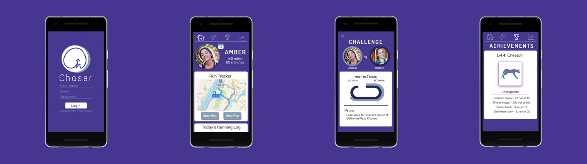
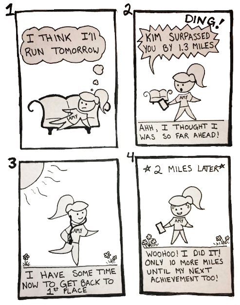

Chaser
This quarter-long project was completed for the
college course
COGS120/CSE170 (Human-Computer Interaction Design). I worked with Jacobzen Chang
and Kristen Santos on this project. The goal of this course was to give hands-on practice with a modern human-centered design process while building a web application
to serve a set of target users.
Roles
Research, Sketching,
Prototyping, & User testing
Duration
September - December 2018
DESIGN GOAL
The struggle to become fit by running should be physically
challenging, not mentally challenging. In order to support this statement, we set out to find a way to enhance
one's running experience so that the activity would be perceived more positively rather than as an inconvenience.
OBSERVATIONS/INTERVIEWS
We interviewed a current athlete, a former athlete, and a running club member.
As for the activity, we merely asked them to run. We thought that keeping our expectation rather broad and having participants from
various backgrounds would lead to a more interesting, insightful set of observations that would allow us to improve the experiences of a variety of
student runners. We were interested in observing people as close to their natural settings as possible, so we tried to be flexible by
allowing the participants to run in whatever way "running" meant to them.
Top User Needs:
- Students need a way to get back into shape and motivate themselves to continue to practice their running ability.
- Students need to have easily accessible, meaningful metrics to track their progress which could include aspects such as fitness or performance.
- Students need a way to get more partners for runs because running independently does not allow for socialization and can seem lonely.
STORYBOARD
We created a short storyboard to demonstrate who the user is, the usage situation,
and the user's motivations for using the interface.

PAPER PROTOTYPE
We quickly put together paper prototypes
based on the concept of self-improvement via competition. After laying out the user flow that we believed would best
meet our user needs, we had students test our prototype, and we recorded our observations through an heuristic evaluation.

FINAL SOLUTION
We finalized our app’s name to be Chaser. This name suggests the involvement of two people and also encompasses the idea of catching up to a person,
factors which are essential to our app’s concept of friendly competition and wagered prizes. Through our app people can place bets and challenge their friends to see who can
run more, using a comparison of statistics as a way to determine the winner. The added element of competition allows for people to not only keep track of their own progress over time,
but also to see how they measure up to their peers as a source of motivation.
Copyright © 2019 Brittany Newton